j(progn
(forward-char 1))k
f 就會跳出 f ，然後迅速消失並跳到下一個左括號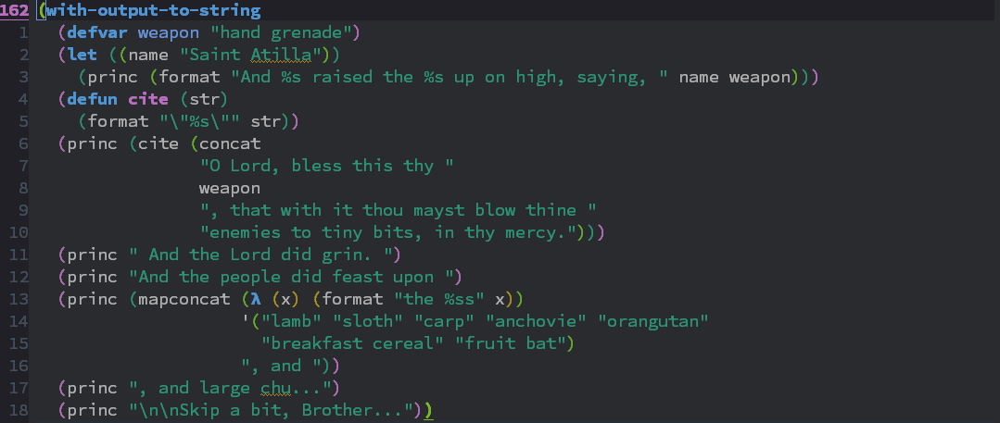
[ 跳回當前的左括號處，進行其他 lispy 的操作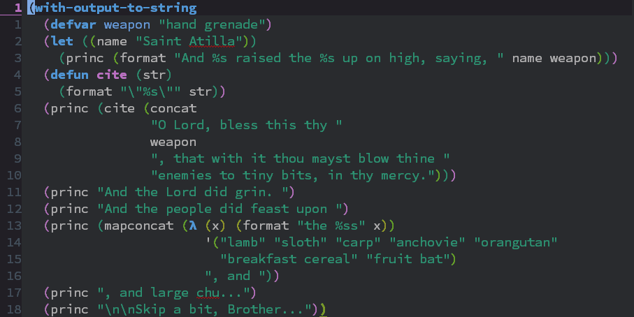
d 就能在左右括號處跳換f 與 d 練習在一群左右括號中做循環的跳轉f 是以往前一個括號的方式轉換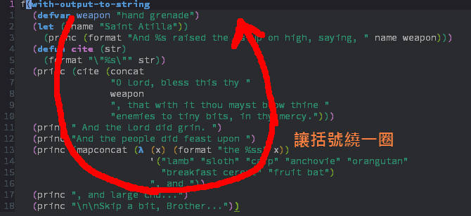
[ 與 ] 可以在括號內跳轉到左右括號處f 的方向相反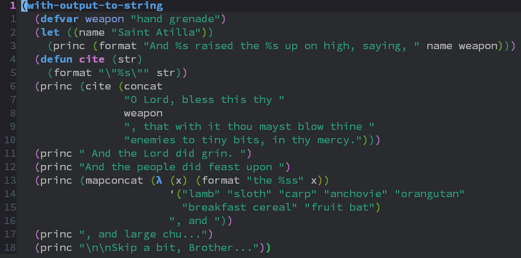
c 會立即複製貼上當前括號內容Ctrl+d 會刪除當前括號內容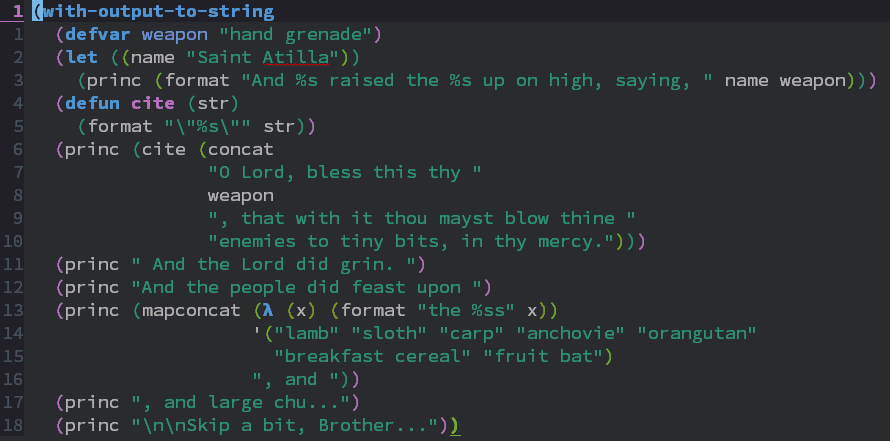
2+SPC 會跳到括號內起始處方便編輯3+SPC 會跳到括號內末尾處方便編輯4+SPC 當我們要在末尾處大量修改時，可以新建一空白行方便編輯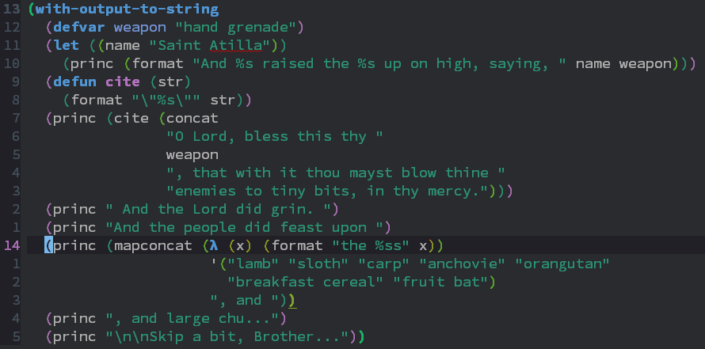
v 即可將目前括號對準視窗第一行v 即可恢復原本位置N 即可隱藏其他括號內容，專注當前括號編輯W 即可恢復被隱藏之隱藏內容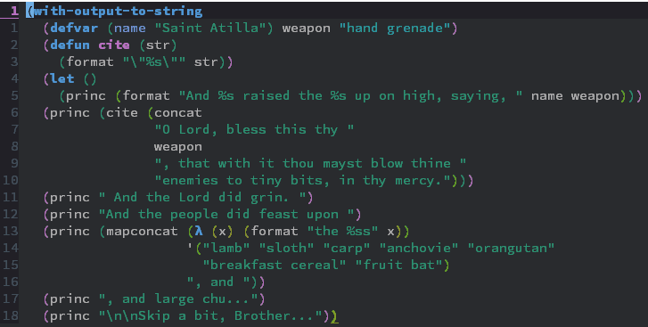
+ 即可將當前括號，和同一層級的括號合併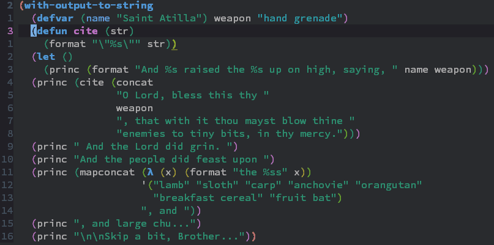
< 會將括號中的東西吐 (barf) 出來< 括號會往右移動，將第一個元素移出括號< 括號會往左移動，將最後一個元素移出括號< 與 > 在左右括號時的不同操作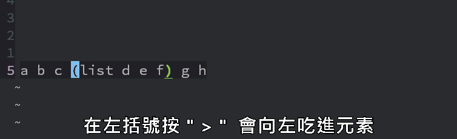
. 重覆同樣的操作u 對任何操作進行 undo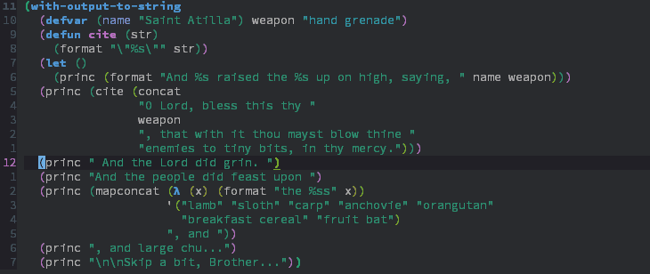
O 即可將括號內容，變成單一一行M 則可將括號內容展開為多航表示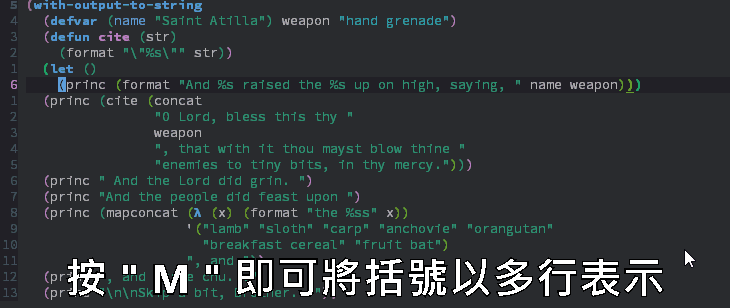
y 即可進入 occur 模式C-g 即可脫離 occur 模式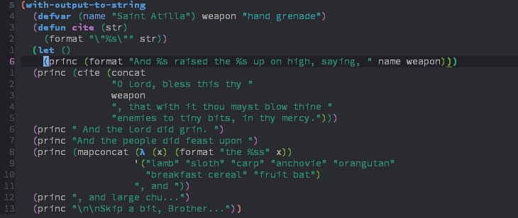
F 即會開啟對應 macro 的位置檔案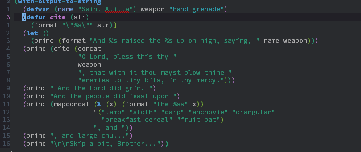
C 將後續括號對齊目前位置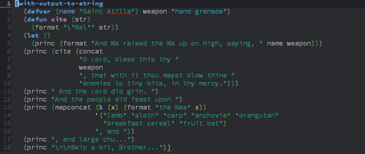
q 即會標示出所有括號起始處，選擇標示即可讓跳躍到該處Q 則是可標示出符合輸入字母的位置，選擇標示即可跳躍到該處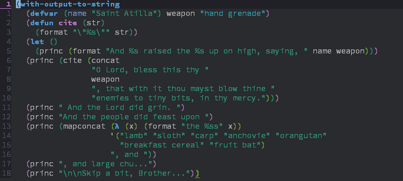
a 即可跳至標示處並向後選取- 則是跳至標示處向前選取H 如同 a 與 - 一樣，不過會把標示刪除留下空格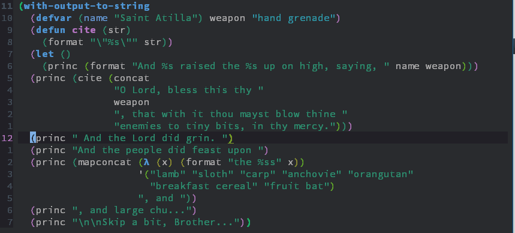